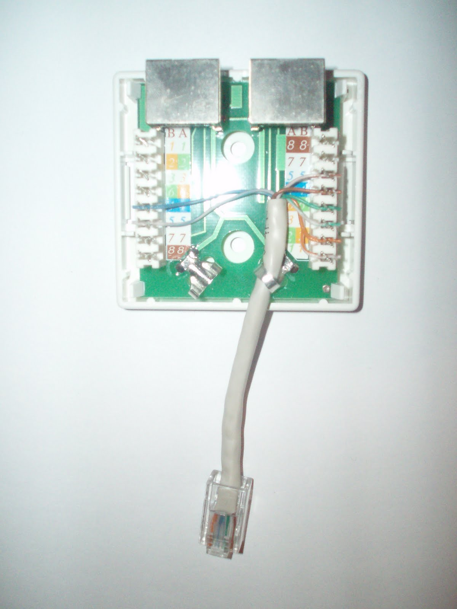
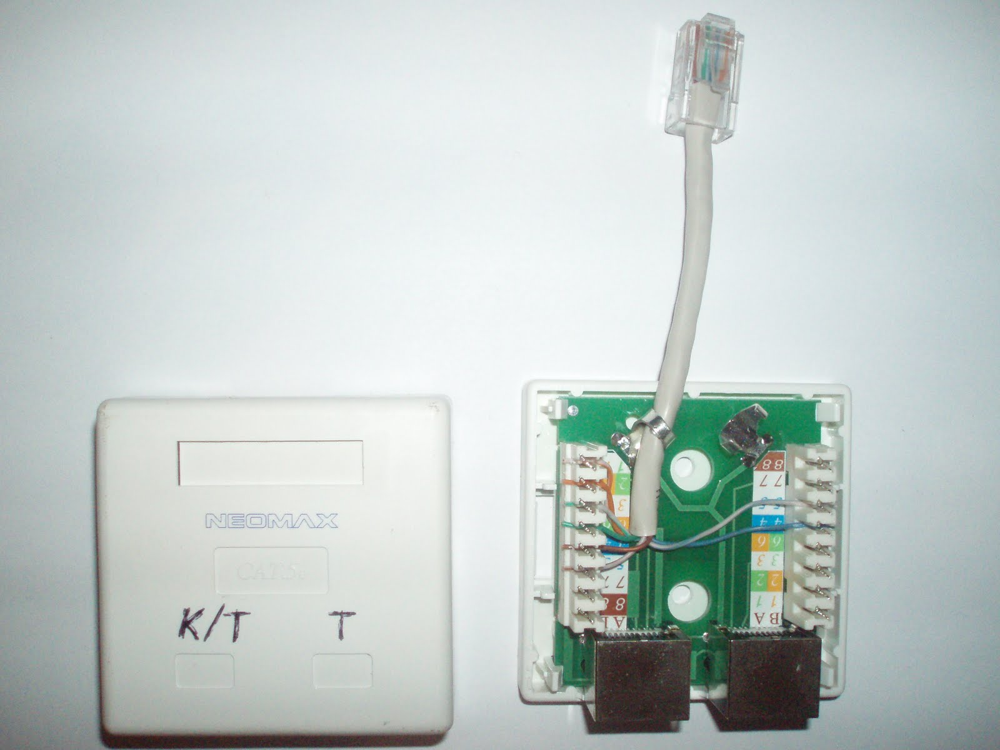
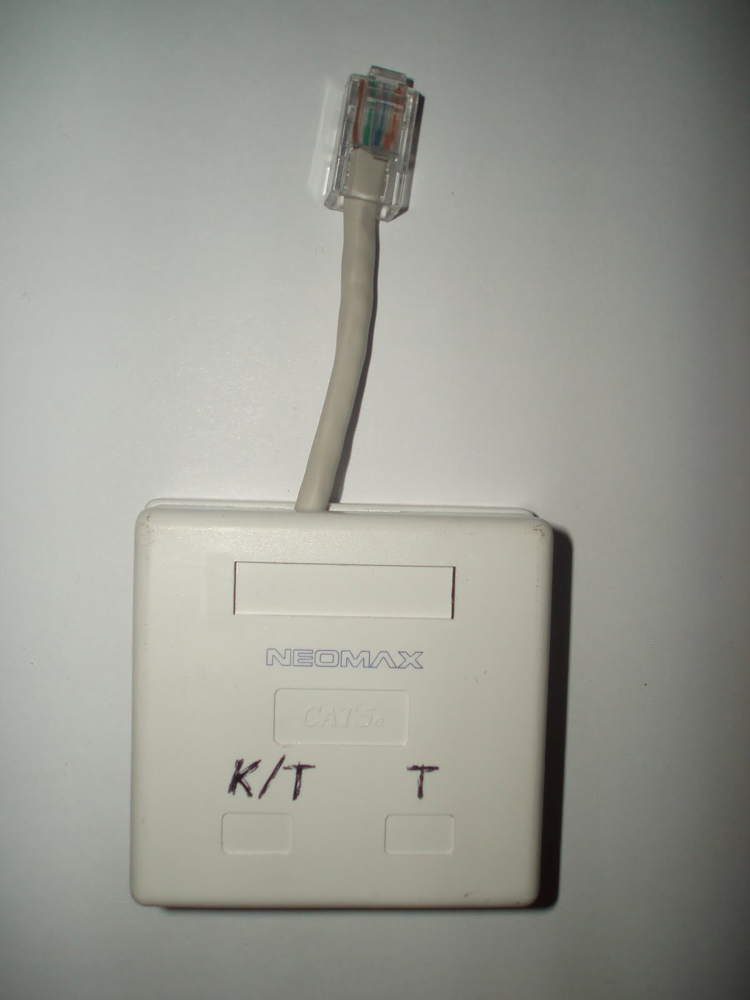

На работе практически состоялся переезд в новый офис. Переехало около 80 рабочих мест телефон+компьютер, 7 серверов, 2 маршрутизатора, телефонная станция, 5 IP-линий связи, два телефонных потока по 7 и 10 номеров. Коммутация выполнялась на 110 панели, компьютеров - двупарными и четырёхпарными патчкордами RJ45-110, телефонов - кроссировочным кабелем.
СКС не была расчитана на такое количество народа, поэтому практически в каждой второй розетке разводили 8-парные UTP-кабели на компьютер и телефон.
На 110 панели пары идут в таком порядке: синяя, оранжевая, зелёная, коричневая.
на панель 110 на розетки (схема B) синяя -------\ оранжевая (1 разъём) оранжевая -------/ зелёная (1 разъём) зелёная -------\ оранжевая (2 разъём) коричневая-------/ зелёная (2 разъём)
на панель 110 на розетку (схема B) синяя -------\ синяя оранжевая --------\ оранжевая зелёная --------/ зелёная коричневая-------/ коричневая
на панель 110 на розетку (схема B) синяя -------> синяя оранжевая зелёная коричневая
Однако при этом развести розетку для телефона лучше точно так же, как и для компьютера, чтобы розетка была универсальной и её легко можно было перекоммутировать на панели для подключения компьютера.
на панель 110 на розетку (схема B) синяя -------> синяя оранжевая - - - - \ оранжевая зелёная - - - - / зелёная коричневая- - - -/ коричневая
на панель 110 на розетку (схема B) синяя - - - -> синяя (1 разъём) оранжевая --------\ оранжевая (1 разъём) зелёная --------/ зелёная (1 разъём) коричневая-------> синяя (2 разъём)
на панель 110 на розетку (схема B) синяя -------> синяя (1 разъём) оранжевая --------\ оранжевая (2 разъём) зелёная --------/ зелёная (2 разъём) коричневая- - - -> синяя (2 разъём)
На фотографиях ниже наглядно представлена схема разводки розетки.
  Я без задней мысли разводил двойные розетки по первому варианту.
Сегодня с утра начальник был очень разгневан моим безответственным поведением. Если при разводке по всем схемам 1 - 3 телефон на панели всегда оказывался на синей паре, то при разводке на двойную розетку компьютер-телефон по схеме 4.1, на панель телефон приходил коричневой парой. Это приводило к путанице и необходимости поиска телефонной пары на таких розетках.
Так вот, если кто не знает как лучше развести UTP-кабель на двойную розетку компьютер-телефон, знайте - лучше обжимать по схеме 4.2. Возможно это общепринятая практика, но мы научились на собственных шишках.
Говорят что дураки учатся на своих ошибках, а умные - на чужих. Желаю вам быть умными людьми.
Обновлено 13 марта 2010.